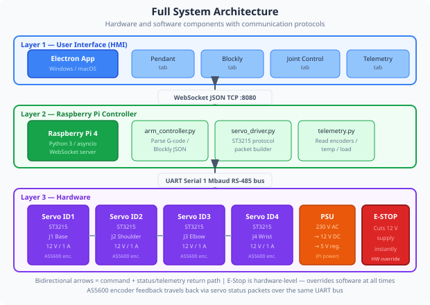

Understanding how mechanics, electronics, software and control theory combine into a single working system.
Mechatronics is the engineering discipline that combines mechanical engineering, electrical engineering, and computer science into integrated systems. The word is a portmanteau of mechanics and electronics.
Structure, joints, links, gears, bearings, materials
Power supply, motors, wiring, PCBs, sensors
Control algorithms, interfaces, communication protocols
Feedback loops, PID, path planning, safety limits
This arm is a complete mechatronic system. You cannot understand or fix a problem in one domain without understanding how it connects to the others.

Every action you trigger in the app travels through five distinct layers before a joint actually moves:
| Challenge | Example in this system | Engineering solution |
|---|---|---|
| Timing / latency | WebSocket round-trip adds delay to feedback loop | Local PID runs on servo; only setpoints are sent over network |
| Unit mismatch | App sends degrees; servo expects raw encoder counts | Conversion function in Python server |
| Power sequencing | Servos must be powered before comms begin | Connection handshake checks servo IDs at startup |
| Mechanical compliance | Backlash causes position error even with accurate commands | Dead-band in control loop, approach from same direction |
| Thermal management | Motors heat up over long duty cycles | Load monitoring, automatic current limiting in servo firmware |
You will trace a single user action through all five layers of the system, observing what happens at each stage.
Click the Pop Out button in the 3D Visualisation tab to open the 3D model in a separate always-on-top window. Arrange this alongside the main app window showing Joint Control. Now, when you command Joint 1 to move 30°, you can simultaneously watch the 3D model update, the live angle readout change, and the load % respond — three data streams from three system layers, all in one view.
Individual components — servos, Raspberry Pi, network — are well-understood in isolation. The difficulty in real engineering projects is making them work together reliably. This is why systems integration is a dedicated engineering role in industry.
When you built a Blockly program and watched it execute on the physical arm, you experienced the entire mechatronic stack in action. Most users never think about the five layers beneath a button press — but engineers must design, test, and maintain every one of them.
Industry connection: Automotive manufacturing robots, surgical robots, and warehouse automation systems all follow the same layered model — HMI → network/fieldbus → controller → actuator/sensor. The vocabulary and patterns you have learned here transfer directly.
1. In this arm's system stack, where does PID control run?
2. Mechatronics combines which disciplines?
3. A command sent from the app is silently dropped and the arm does not move. Which layer should you investigate first?